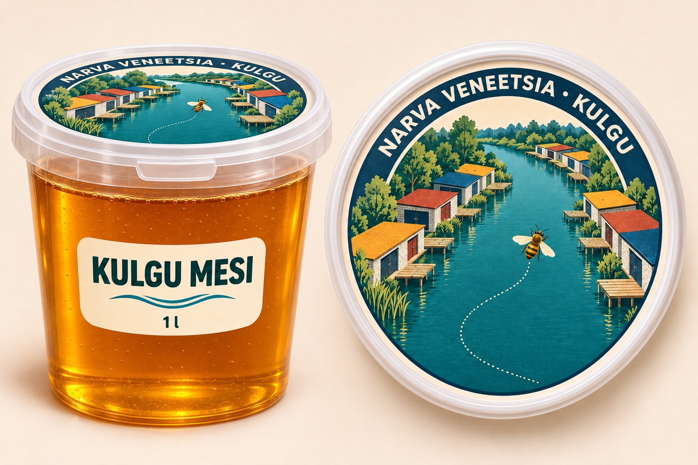
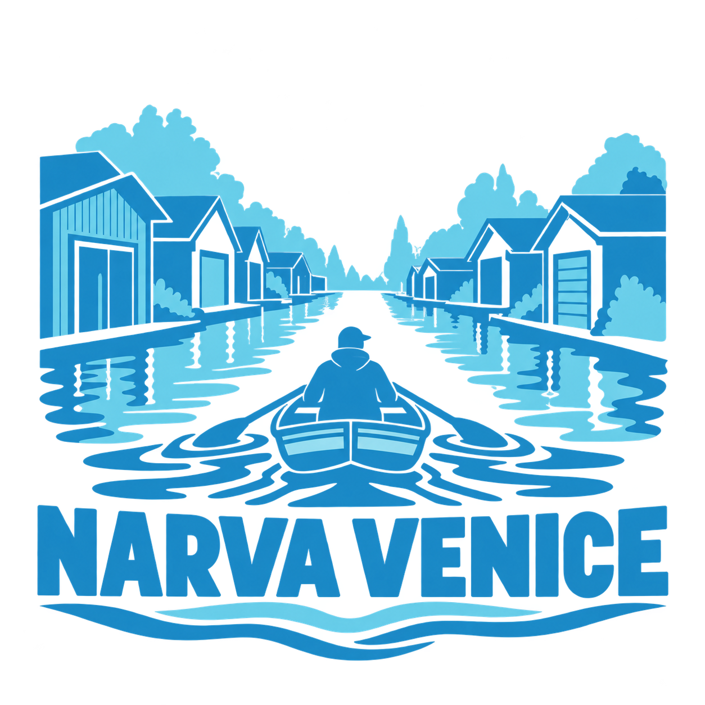

Mesi
Mesi liitrises purgis, mille kaanel on Kulgu kanali illustratsioon.
Pakendi kavand. Üksikasjade vaatamiseks klõpsa pildil.

NarvaMesi liitrises purgis, mille kaanel on Kulgu kanali illustratsioon.

Pakendi kavand. Üksikasjade vaatamiseks klõpsa pildil.